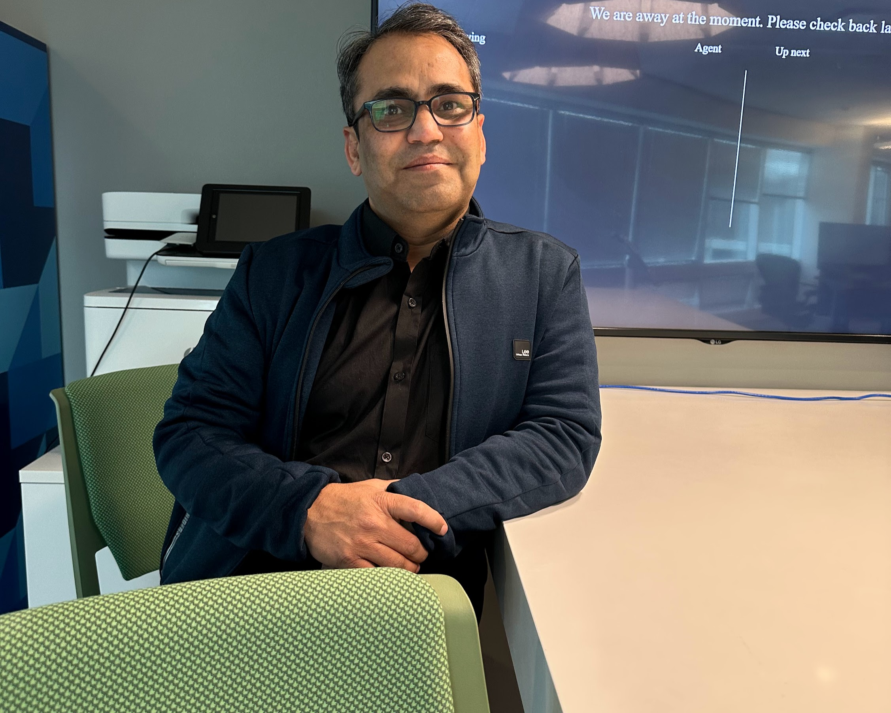
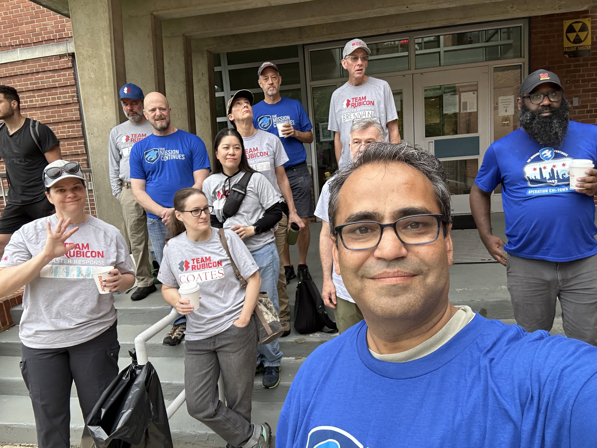
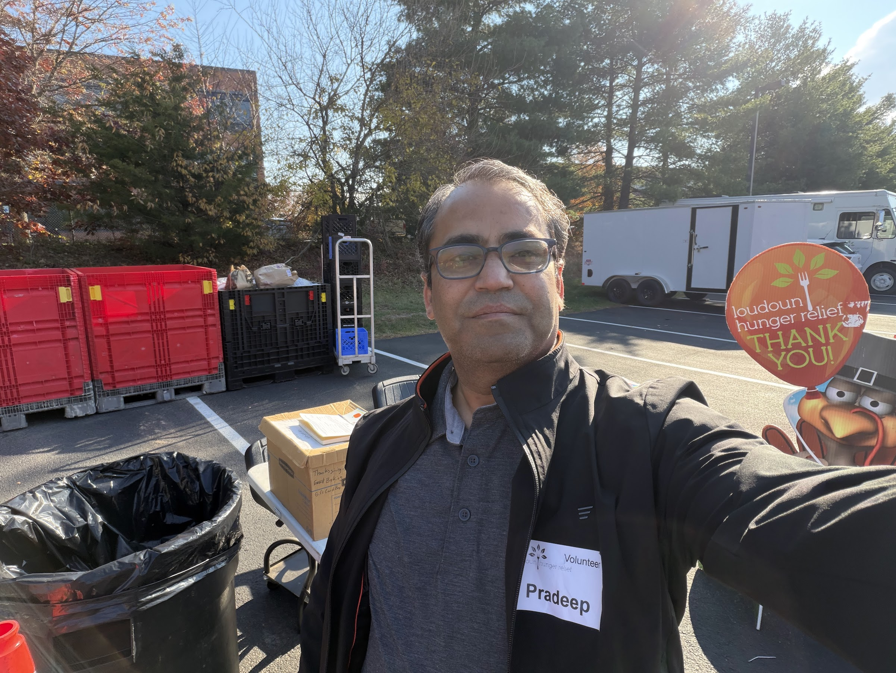

Performance Engineering Expert | Cloud Architect | Technology Leader
Transforming enterprise systems through strategic performance and cost optimization, achieving multifold improvements in scalability and reliability

Performance Strategist and Architect | Expert in Energy Efficiency, Cost Optimization and Sustainable Computing
I am Pradeep Kumar, a Performance Expert with over 20 years of experience in IT, specializing in Performance Engineering, Capacity Planning, and Application Development. My current role as a Development Expert at SAP SuccessFactors allows me to lead performance optimization efforts for the HCM Learning Suite, ensuring scalability, reliability, and meeting non-functional requirements for our global customers.
Over the years, I have gained expertise in migrating and optimizing databases, including leading the Oracle to HANA DB transition for including multiple high-profile customers (GSK, HSBC, Disney). My work also involves multi-cloud architecture, advanced performance tuning, and adopting technologies like Databricks, Kafka, and Kubernetes to enhance product scalability and efficiency. Under my guidance, the SAP SuccessFactors Learning product has seen a 10x performance improvement.
With hands-on experience in technologies like Java, .NET, C++, Python, Machine Learning, Artificial Intelligence, databases like Oracle, HANA, MySQL, and various cloud platforms (Azure, AWS, GCP), I specialize in solving complex performance challenges, designing cost-effective solutions, and driving impactful results for large-scale systems.
Leading performance optimization initiatives for HCM SuccessFactors Learning Suite, ensuring scalability, reliability, and meeting SLAs for global customers.
31+ published papers contributing to performance engineering and sustainable computing
Comprehensive study on the evolution of garbage collection algorithms and future directions in JVM memory management and optimization.
Read PaperInnovative approach to reducing CPU overhead and memory costs in multitenant environments through regex pre-compilation strategies.
Read PaperTechniques for optimizing JVM memory footprint in Spring-based applications running in multitenancy environments.
Read PaperCaching-driven approach to enhance perceived performance and user experience in enterprise learning platforms.
Read PaperStrategies for optimizing HTTP session management to improve scalability and performance in distributed systems.
Read PaperExploring how AI and ML techniques can be applied to optimize garbage collection policies and improve JVM performance.
Read PaperAdvanced garbage collection tuning using Transparent Huge Pages and memory pretouch techniques for enterprise applications.
Read PaperComprehensive guide to optimizing multithreaded applications for maximum performance and resource utilization.
Read PaperResearch on sustainable computing practices focusing on energy-efficient garbage collection and green computing.
Read PaperOptimization techniques for SAP HANA SQL queries to achieve faster processing and improved cost efficiency.
Read PaperComprehensive study of Log4j optimization techniques for high-throughput enterprise systems.
Read PaperBest practices and strategies for migrating from Oracle to SAP HANA with focus on performance and scalability.
Read PaperShowing 12 of 31+ published research papers
Core competencies and technical skills
End-to-end performance optimization, load testing, and capacity planning for enterprise systems
Expertise in Azure, AWS, GCP with focus on scalability, reliability, and cost optimization
Deep knowledge of JVM internals, GC tuning, and memory footprint reduction for multitenancy
SAP HANA, Oracle, MySQL query tuning and migration strategies for high-performance systems
Applying machine learning for workload design, capacity planning, and performance analysis
Energy efficiency, cost optimization, and green computing practices in enterprise applications
Honored for excellence in technology innovation and leadership
2025
Recognized for exceptional achievements in technology innovation and business transformation.
2025
Awarded for significant impact in advancing enterprise performance engineering practices.
2025
Honored for groundbreaking research contributions in system performance optimization.
Multiple Years
Multiple internal awards for outstanding contributions to SAP's cloud platform performance.
Featured in leading technology and business publications
"Approaches To Performance Engineering For Scalable And High-Throughput Enterprise Systems"
Read Article"Supercharging Performance: How Strategic Engineering Transforms Cloud Scalability & Reliability"
Read Article"Breaking the Terabyte Barrier: Performance Optimization Enables Record-Breaking Data Management"
Read Article"Strategic Caching Innovation Reduces Database Costs While Boosting Application Performance"
Read ArticleActive member of leading professional organizations
Member #100991021
Northern Virginia Section
Institute of Electrical and Electronics Engineers - World's largest technical professional organization
Professional Member
Since 2025
Association for Computing Machinery - International society for computing professionals
Open Researcher & Contributor ID
Research Identity Platform
Persistent digital identifier for researchers and contributors
Active Contributor
Peer Review Platform
Contributing to open peer review and scientific publication process
Partner with me to design scalable, high-performance systems engineered for efficiency and sustainability
pradeepkryadav@gmail.com
linkedin.com/in/pradeepkryadav
github.com/pradeepkryadav
Social Work & Community Service
Giving back to the community through volunteer work and mentorship
Special Olympics Coach
Virginia, USA
Certified coach for Special Olympics sports programs including basketball. Completed training in General Orientation, HEADS UP Concussion, and Protective Behavior. Active participation in multiple community events supporting athletes with intellectual disabilities.

The Mission Continues
Washington DC, USA
Community service volunteer supporting veteran initiatives and community improvement projects. Participated in multiple service platoons focused on transforming communities through veteran leadership.

Loudoun Hunger Relief
Loudoun County, VA
Volunteer work fighting hunger in the local community. Participated in food distribution, sorting, and supporting families in need through organized volunteer programs.
CodePath Mentor
USA
Technical mentorship for aspiring software engineers, helping students from underrepresented backgrounds break into the tech industry through coding education and career guidance.